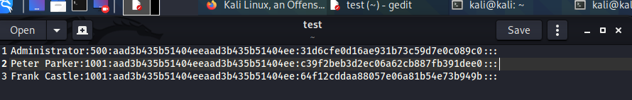

WDA and defualt ones accounts not usefl and hence only kept below ones

thse hashes are called as ntlm pprev ones which we cracked using hashcat were ntlmv2 hashes
ntlm is local hash and are stored under module 1000
if we cant crack them then we will pass them around
u can pass around ntlm hashes bt not ntlmv2 hashes


thus for admin u got blank which signifies that password is disbaled for this account so we cant pass it through the network
can use Password1 and Password2 and they are easy passwords ndo note it down